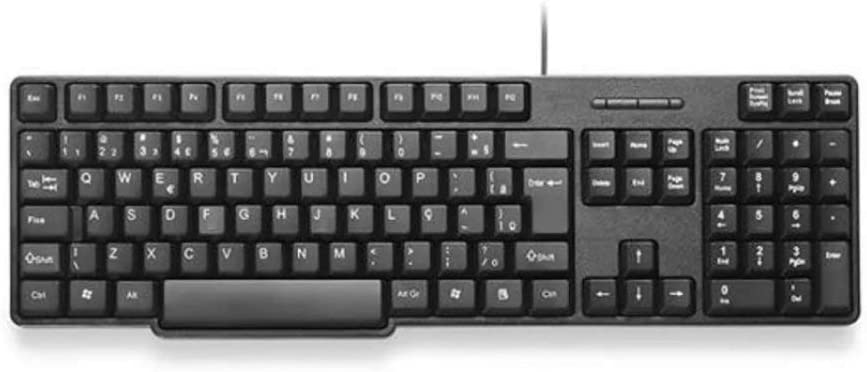
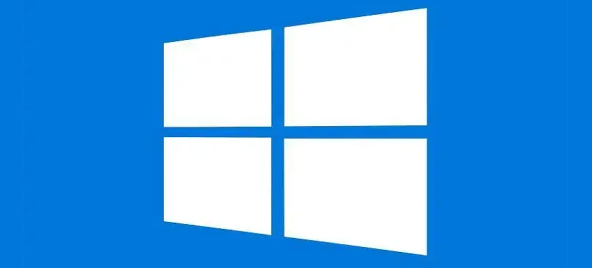
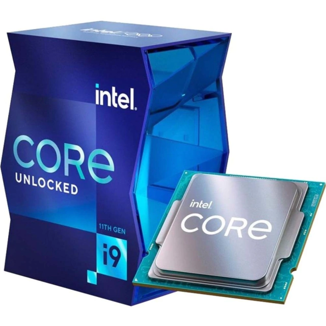
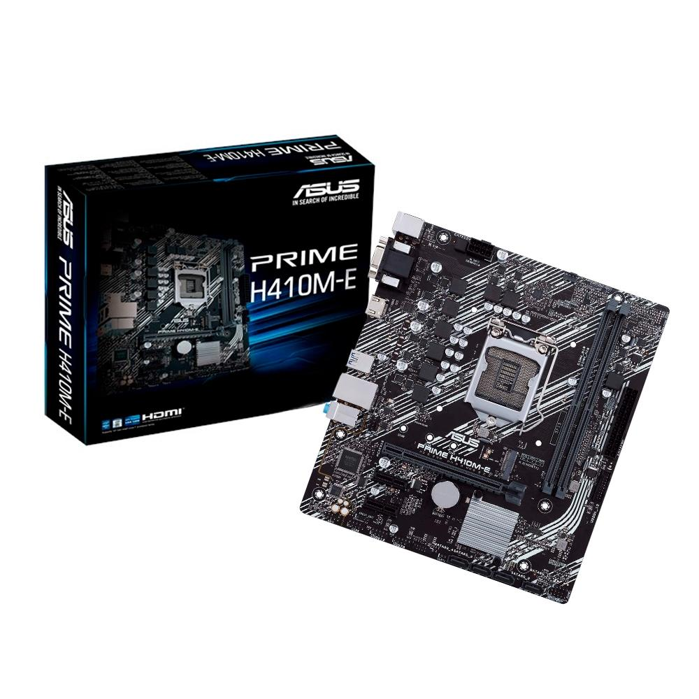
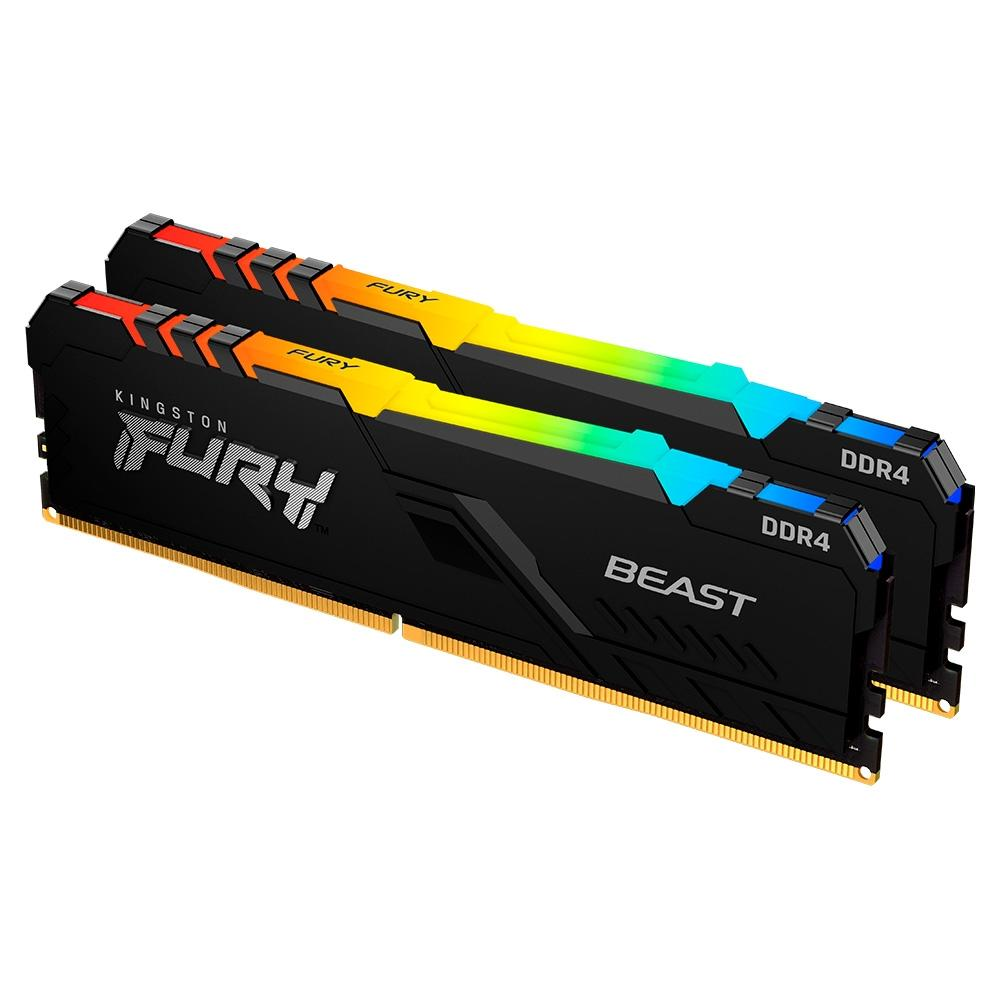
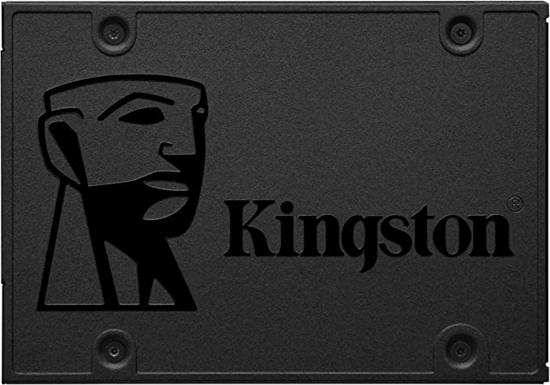
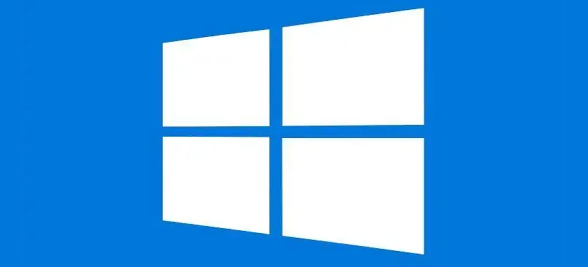
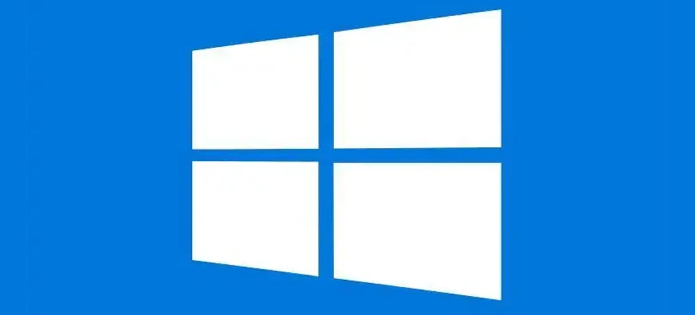

1-O que é hardware? Me dê no mínimo três exemplos, uma imagem dos
exemplos dados
Resposta:Hardware é a parte física do computador, ou seja, peças e equipamentos que fazem o computador funcionar
Exemplos:Monitor,Teclado e mouse são exemplos de hardware

2- O que é software? Me dê no mínimo três exemplos, uma imagem dos
exemplos dados.
Resposta:Um software é um serviço computacional utilizado para realizar ações nos sistemas de computadores.
Exemplos:Windows, MacOS e Android

3- Em uma frase responda o que é um processador, o que é memória cache, o
que é a velocidade de clock interna e a velocidade de clock externa.
Na linha de baixo, coloque uma imagem de processador de sua escolha, do lado da imagem
coloque marca e modelo, velocidade de clock interna, velocidade de clock externa, cache, e o
link do fabricante de onde tirou os dados técnicos.
Resposta:Processador são chips responsáveis por executar
instruções, decisões logicas, cálculos que tem como resultado todas as tarefas que um
computador pode executar; a Memoria Cache é uma memória pequena e muito rápida, memória mais próxima do
núcleo com objetivo de atender a demanda do processamento; A velocidade de clock interna é a velocidade de execução dos programas;
E a velocidade de clock externa é a velocidade do barramento

Marca:Intel
Modelo: BX8070811900K
vel clock interna: 8 GT/s
vel clock externa: 3.50 GHz
Memoria cache: 16MB
4- Em uma frase me responda o que é uma placa mãe.
Na linha de baixo, coloque uma imagem de placa mãe de sua escolha, do lado marca e modelo,
soquete, chip set (no mínimo um no máximo três), qual o modelo a placa mãe suporta sendo
memória RAM (DDR1, DDR2, DDR3, DDR4 ou DDR5), formato da placa mãe (Mini-ITX,
MicroATX, ATX, EATX) e o link do fabricante de onde tirou os dados técnicos.
Resposta:A Placa mãe É uma peça central responsável por conectar e interligar todos os componentes (processador com memória RAM, disco rígido, placa gráfica). A placa une todas as partes do sistema numa só rede de fios, porque dispõe de caminhos que permitem a troca de informação entre processadores, memórias, placas e etc.

Marca: Asus
Modelo: PRIME H410M-E
Soquete: Socket 1200
Chip set: Processadores Intel® H410
Memoria RAM: DDR4
Formato da Placa Mãe: 22.6 cm por 20.3 cm mATX
5- Em uma frase me responda o que é memória RAM, e a conexão que ela tem da
imagem escolhida por você.
Resposta:A memória Memória volátil rápida em comparação as memórias não voláteis,
utilizada pelo processador, sistema operacional e softwares para acessar rapidamente.

Esta Memoria RAM Possui DDR4
6- Em uma frase responda o que é memória Solid State Drive, suas vantagens, e a
conexão que ela tem da imagem escolhida por você.
Resposta: Solid State Drive são os Dispositivos capazes de armazenar dados de
forma não volátil, utiliza tecnologia de chips de memória para armazenar os dados.
Este SSD possui uma entrada SATA.

Não possuem partes mecânicas
Funcionamento sem ruído
Maior resistência contra impacto
Menor peso
Menor consumo de energia
Melhor desempenho em locais quentes (70°C)
Leituras e gravações mais rápidas
empo de acesso reduzido
7- Qual a importância do nobreak para um servidor? Uma imagem de um
datacenter e um nobreak, imagens uma do lado da outra.
Resposta: Fornecer uma energia limpa e de qualidade para os equipamentos eletrônicos, evitando que eles sofram danos causados por instabilidades e picos de tensão oriundos da rede elétrica
8- O processador escolhido por você tem quantos núcleos e quantas threads
Resposta: O Processador possui 8 Nucleos e 16 Threads

 
